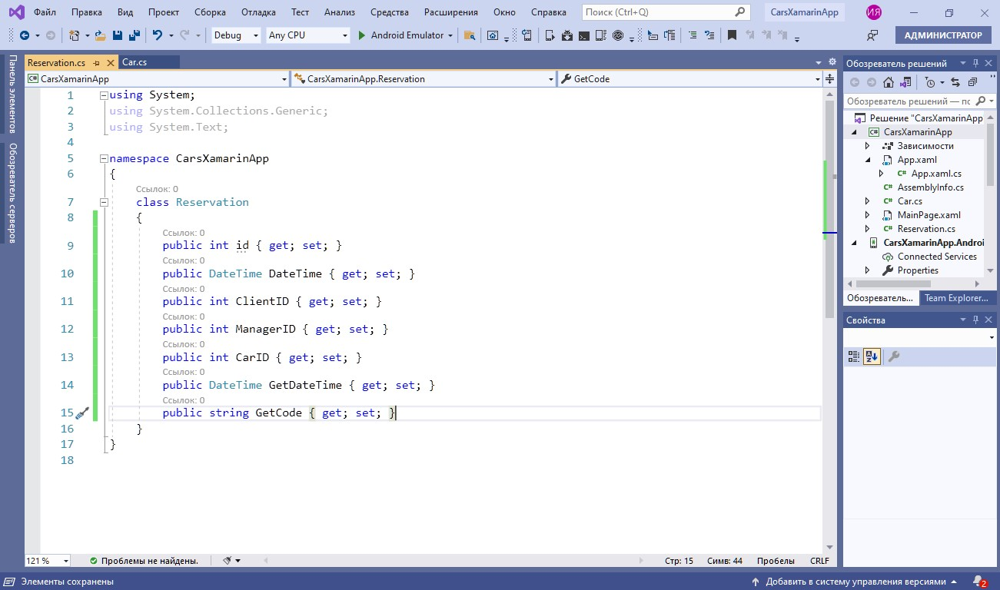
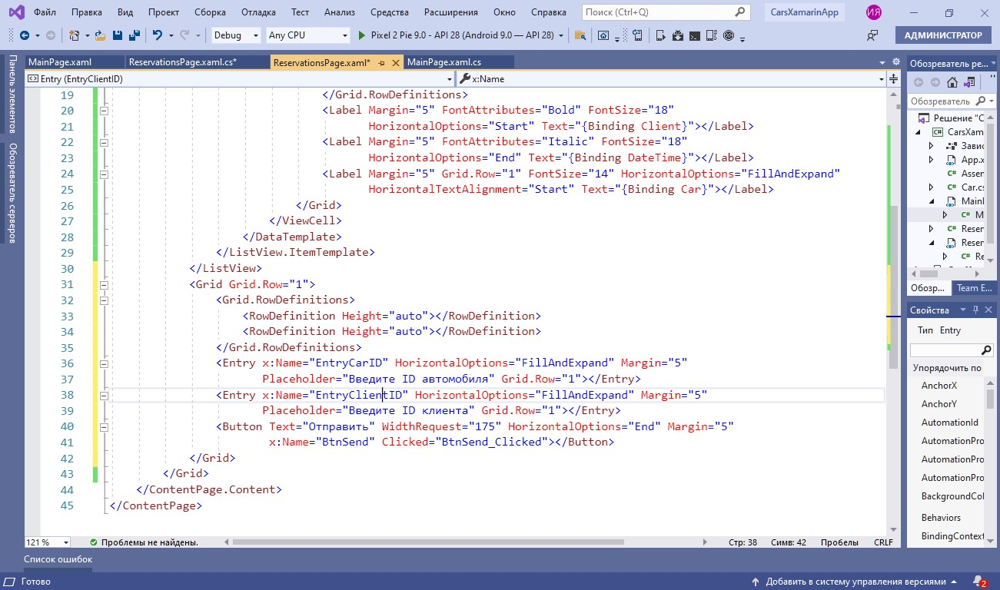
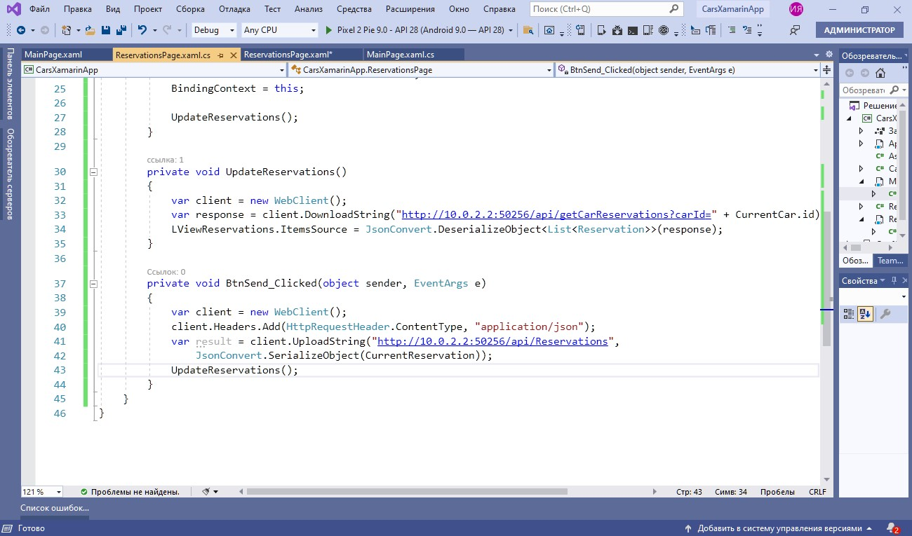

Продолжим тему мобильной разработки и поговорим о кроссплатформенной разработке на Xamarin.Forms. Эта платформа позволяет создавать одну единственную логику приложения с применением C# сразу для всех трех платформ: Android, iOS и UWP. Из преимуществ можно назвать: единый код для всех платформ, прямой доступ к нативным API каждой платформы, возможность использования платформы .net и языка программирования С#, который является достаточно производительным, и в то же время простым для освоения и понимания.
1. Для начала создаем проект в Xamarin.Forms
- Даем ему название
- В Xamarin представлен ряд шаблонов. Можно использовать списки, вкладки… Пока что мы будем просто выбирать Blank — пустую страницу, и убираем платформу iOS — нам сейчас нужен только Android
- В файле App.xaml.cs прописываем главную страницу для навигации
- Ставим разрешение на использование интернет-подключения. Делается это в настройках проекта
2. Начинаем с верстки MainPage. Она будет представлять собой простой
список — ListView. Здесь мы обрабатываем события нажатия, привязываем данные и делаем разметку
Важно
В свойство ListView установливаем параметр HasUnivenRows, который позволит иметь динамический размер объекта.
3. Давайте попробуем получить с помощью API список автомобилей и работать с ним
- Сначала тестируем запрос в браузере
- Полученный ответ мы можем скопировать
- Создаем новый класс Car в нашем проекте. И с помощью специальной вставки мы можем вставить скопированный текст в виде JSON-объектов
Т. е. мы проанализировали полученный ответ и создаем в соответствии с этим свойство
- Также мы можем добавить свое свойство — оно нам пригодится для вывода изображения
- По аналогии создаем класс Reservation

4. На странице MainPage мы получаем список автомобилей с помощью класса WebClient, где указываем строку подключения, также, как это было в Android 10.0.2.2.
5. Результат возвращается нам в формате json, который мы будем обрабатывать. Удобнее всего использовать библиотеку Newtonsoft. Json, позволяющую конвертировать объекты в формат типа json и обратно. Эти процессы называются сериализацией и десериализацией соответственно.
- Для начала подключаем библиотеку Newtonsoft. Json в проекте
- Десериализуем ответ в список автомобилей и установливаем в качестве источника данных ListView. Не забудьте пересобрать проект, прежде чем это делать
- Запускаем созданный проект на эмуляторе. Список автомобилей выводится
6. Теперь создаем вторую страницу ReservationsPage для просмотра бронирований и добавления новых
7. Добавляем ListView для вывода бронирований
- указываем динамический размер элементов, привязку данных
- выполняем привязку содержимого
8. В качестве источника данных для привязки мы можем использовать объект любого публичного класса. В том числе и ReservationsPage
- Поработаем с конструктором новой страницы ReservationsPage, передавая в качестве параметра объект выбранного автомобиля. Cоздаем дополнительные свойства для биндинга
- Создаем метод для обновления списка бронирований, где получаем ответ с помощью запроса GetCarReservations, и десериализуем ответ. После этого загружаем полученный результат в список
- Вызываем метод updateReservations после отображения страницы
- Теперь создаем переход на эту страницу с главной. С помощью метода PushAsync мы будем передавать экземпляр выбранного автомобиля в списке
- Делаем остальные элементы управления для добавления бронирования. Сразу делаем привязку и обрабатываем клик по кнопке «отправить»

- Используем метод POST для загрузки бронирования. В нем мы будем использовать метод UploadString для загрузки данных и передавать туда тот объект, который мы создали. При этом его нужно будет сериализовать. Не забудьте указать ContentType у вашего запроса и после этого обновить бронирования

9. Запускаем и тестируем созданный функционал. Выбрав автомобиль, открываем бронирования, которые к нему относятся, и можем добавить свое
Итоги
Мы рассмотрели создание приложения Xamarin.Forms, освоили навигацию между страницами, поработали со списками, получая информацию с помощью GET запросов нашего API, а также протестировали работу POST запроса на примере добавления бронирования автомобиля.